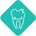
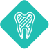
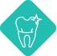
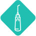
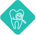

Лечение кариеса молочных зубов
Наши стоматологи эффективно и без боли вылечат как поверхностный, так и глубокий кариес.

Лечение пульпита молочных зубов
Наша задача – максимально сохранить заболевший зуб, при этом ребёнок может почувствовать себя космонавтом и «полетать во сне» во время лечения.

Удаление молочных зубов
При необходимости удалить зуб, наш доктор делает это аккуратно и безболезненно. А если постоянный зуб ожидается ещё не скоро, мы установим специальный «держатель места», чтобы не нарушить развитие прикуса.

Обезболивание
Наше огромное преимущество – наличие в штате собственного анестезиолога. Это врач, который знает всё о комфортных процедурах. Мы используем самые безопасные методы анестезии, которые быстро выводятся и не оставляют следа в организме.

Диагностика
Современное европейское оборудование позволяет на самых ранних этапах выявить уязвимость эмали, сделать точный снимок челюсти и предотвратить нарушения. Наши врачи имеют огромный опыт работы с маленькими пациентами. Доверяйте профессионалам!
Исправление прикуса
Для самых маленьких пациентов индивидуально изготавливаются трейнеры или пластинки. А для пациентов постарше – несколько видов брекет-систем. Современное оборудование позволяет с точностью определить нарушение.